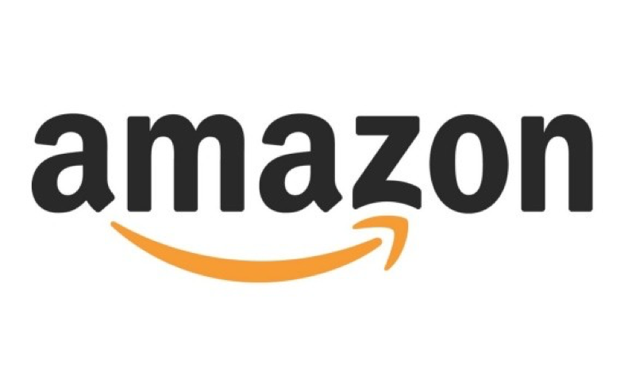
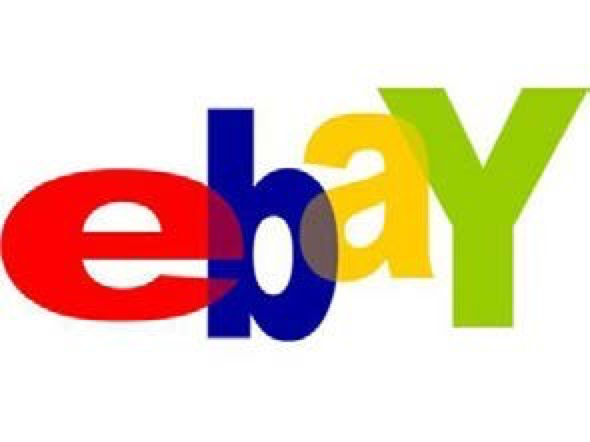

若你有拥有美元账户的借记卡或者贷记卡，就可在网上购物。在繁忙的学习生活中，网购不失为一种省时省 力省钱的好途径。大型综合类网购网站中最为出色的两家可以总结为 amazon 和 ebay。
Amazon 是全球最大的 B2C 电商。货品齐全且价格公道。各种日用品，服装，电器，食物等都有供应。在美国 Amazon 网站上注册一个账号，并提供银行卡信息及送货信息就可开始购物了。需要注意的是这个 Amazon 与国内亚马逊不可混用。学生凭学校邮箱可以免费获得 6 个月的 Prime 服务，到期后可以以学生价 继续订购此项服务。具体参考： https://www.amazon.com/gp/student/signup/info/ref=lp_student/188-5790946-9340369
ebay 与淘宝类似，增加了 auction 功能，就是以竞价的方式进行购买，可以买到非常便宜的商品。另外它的二手商品交易也很成熟健全。在购物之前需要注册易趣账号以及 paypal 账号（相当于国内的支付宝），并提供银行卡信息和送货地址。
以上两个网站也是购买教科书的良好途径。Amazon 提供买与租两种方式。购买新书一般比书店便宜 20%以上，而二手书根据实际情况比新书进一步便宜 20%到 50%。学期末还可以将书卖回 amazon，账户内可以获 得一定量的现金券，用于下次购物。若是租的话就更加便宜了，须在截止日前将书寄回，邮费由 amazon 承 担。Ebay 一样有新书以及二手书的出售，有些还有国际版出售，价格通常便宜一半以上。
另外大型购物超市 Target, Meijer, Kroger 等也都有在线购买服务。一些服装品牌如 A&F, Gap, Levi’s 等也 可以在官网上在线购买。
不论在哪家网站上购物，退货政策都须事先了解好。Amazon 根据商品类别不同退货政策有所不同。有 prime 服务的用户可以享受更大范围的的免邮费退换货，而且通常由 amazon 直接销售的商品要比私人卖家挂在amazon 上销售的商品退换货容易一些。Ebay 的退货政策是卖家制定的，在商品页面会有详细的说明。